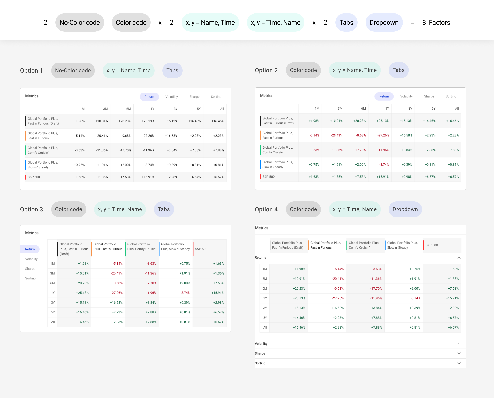

Intro
To extend our product capability, we’re adding ability to add instrument, benchmark to performance chart to compare different metrics including returns over time, volatility etc. When it comes to metrics dimension design, it becomes arguable, so I constructed this A/B test to guide our next step design.
Test Design
The test is a 2x2x2 8 factors testings. Not technically A vs B, but with four layouts (8 variables) we want to test out.
Result
Option 2 got the highest score. and the follow-up interviews explained the results, 3 out of 5 reported the way it compares resembles the way they use excel or other spreadsheet tools.